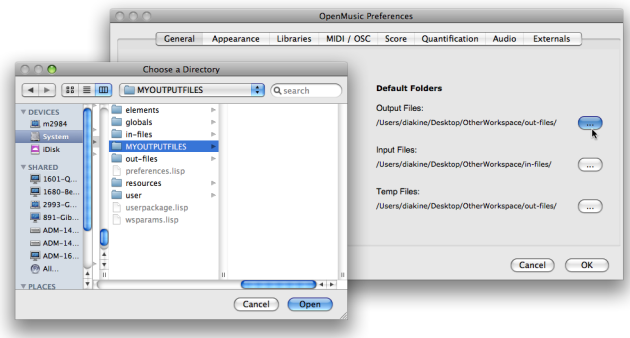
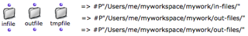
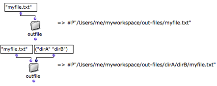

OpenMusic DocumentationHiérarchie de section : OM 6.6 User Manual > Visual Programming II > Files > Default Directories
OpenMusic DocumentationHiérarchie de section : OM 6.6 User Manual > Visual Programming II > Files > Default Directories
Navigation : page précédente | page suivante
Attention, votre navigateur ne supporte pas le javascript ou celui-ci à été désactivé. Certaines fonctionnalités de ce guide sont restreintes.
Default Directories
Default directories can be used for the storage of external input, output and temporary files – MIDI, SDIF or sound files , sound analysis and synthesis files, etc. These storage folders can also be used in programs with the text tools presented in this section.
OM Settings
The default locations are the in-files and out-files directories of the current workspace directory.
Preferences
These directories are selected in the OM Preferences.

{kind=link}
To define a location folder
go to the
Generaltab of the preferences paneclick on the relevant button of the
Default Folderssectionselect a folder for the corresponding item.
Selection
Note that you can select any folder, including out of the workspace, and possibly share these folders between different workspaces.
Infile, Outfile and Tmpfile Boxes
The infile , outfile and tmpfile boxes allow to build pathnames directly in the OM default folders.
Access
To access these boxes
select
Functions / Kernel / Filesand pick a menu itemCmdclick and type "infile", "outfile" or "tmpfile".

Inputs and Output
Each box has one default input where the name of the file can be specified.
A keyword input allows to specify also a list of subdirectories, a specific file extension, etc.
The output returns the a pathname.

Using the Pathname with File-Box
The output of the box can be connected to a streamfile box in a File-Box, where the pointed file can be manipulated.
Références :
Plan :
Navigation : page précédente | page suivante
A propos...(c) Ircam - Centre Pompidou